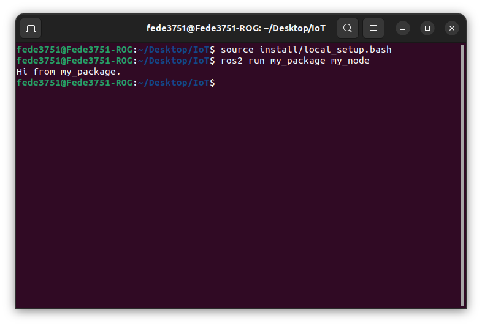
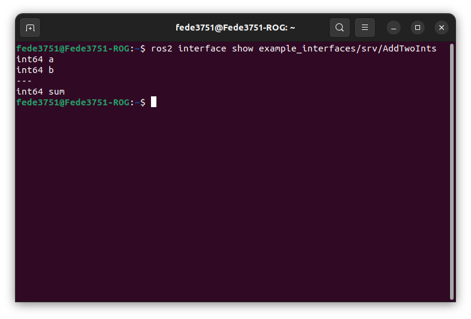

IoT Lab Lecture 2 - 22/03/2023
In this lecture, we will dig for the first time into writing code for a ROS project.
We have previously seen how to interact directly with ROS nodes using the console, which allow us to
interact in a simple way with our program. This can be really helpful when debugging (as it allows us to
interact with other nodes in the simplest way possible), but is not enough when we want to develop
more complex applications, and interact with different nodes simultaneously.
In this lecture, we will see how to interact first with topics, and then services.
Some excercies are given to test your understanding of the new arguments.
Creating your first ROS Application
Up until now, we have seen the paradigm behind a ROS project; however, we have still no clue on how to start a project from scrap.
The most attentious readers may have figured out (from what we said about the source command in the first lecture) that ROS works with different workspaces which contain everything you need to run your code, and they would be right.
In fact, a ROS project is exactly another workspace to source below the ros2 dependencies, once you do that, running your ROS project is no different from running a new TurtleSim node.
We will now see how we can build workspace and packages to organize our code, and then, how to write a simple publisher function.
At the end of this part, you should be able to instruct your turtle to move in a particular way just by running your written code.
Let's get started!
Using colcon
In this part, we will be using the tool colcon to build our first ROS package.
Let's install it before.
If you're using Ubuntu, just run:
sudo apt install python3-colcon-common-extensions
While, on MacOS:python3 -m pip install colcon-common-extensions
With that done, we are ready to use colcon.Let's start by creating a single folder of your choice for your workspace.
Then create a folder named src inside of it.
In this workspace, we are going to clone all the examples of ROS.
Once you're in your src folder, just type:
git clone https://github.com/ros/ros_tutorials.git -b humble-devel
This should have populated your src directory with all the source code of the examples.Before building, if you're using Ubuntu, you may have to check if you have all the dependencies to build your workspace. To do that, go back to the main folder of the workspace and type:
rosdep install -i --from-path src --rosdistro humble -y
You can now build the examples by using the command:colcon build
And test if the build went fine with:colcon test
If everything went fine, you should now be ready to source your new workspace.The file to source a built workspace will be in the install directory. If you're still in your workspace directory, you can source either by running the local_setup.bash file:
. install/local_setup.bash
orsource ./install/local_setup.bash
Just like we did for the ROS main dependencies.If you now try to run your TurtleSim application, it will run from your sourced overlay, instead of the main ROS installation.
If you want a confirmation of this, you can try to edit the name of the application Window. To do that, just edit the setWindowTitle function on line 52 of the file turtle_frame.cpp.
Creating a Package
Most of the time in ROS, you will be working with different packages. A package can be considered a container for your ROS code, and is the ideal way of storing and sharing your code with others.
Packages can be written either in Python or C++, and work together without any conflict.
A ROS workspace containing multiple packages would look something like this:
workspace_folder/
src/
package_1/
CMakeLists.txt
package.xml
package_2/
setup.py
package.xml
resource/package_2
...
package_n/
CMakeLists.txt
package.xml
In your src folder, you can build your Python package with the following syntax:
ros2 pkg create --build-type ament_python [package_name]
For our first package, we will also create a simple node which will serve us as an introductionary example for writing our first node.To do that, we will use the following command:
ros2 pkg create --build-type ament_python --node-name my_node my_package
Once you do that, you can build your package exactly like we've seen before.Go back to the main folder and type:
colcon build
Now, if you source your package, you should be able to run your node with the command:ros2 run my_package my_node
Which should output something like this:  The source file for this message can be found here:src/my_package/my_package/my_node.py
With this. You have officialy created your first ROS node from scrap.Nice. Now I guess you would like to do something actually interesting with the node. Let's get to it!
Writing your first script
Using Topics - Writing a Publisher and Subscriber Nodes
In this part, we will write our first couple of publisher and subscriber nodes for a topic.
Let's first create a package for our example:
ros2 pkg create --build-type ament_python py_pubsub
Now, let's cheat a little bit.Instead of writing our publisher and subscriber from scratch and being lost for hours in order to understand the syntax, let's copy the code of two simple publisher and subscriber from the ROS examples.
Just navigate to src/py_pubsub/py_pubsub and copy the examples from the ROS github with the following command:
wget https://raw.githubusercontent.com/ros2/examples/humble/rclpy/topics/minimal_subscriber/examples_rclpy_minimal_subscriber/subscriber_member_function.py
wget https://raw.githubusercontent.com/ros2/examples/humble/rclpy/topics/minimal_publisher/examples_rclpy_minimal_publisher/publisher_member_function.py
Let's take a look at the code of these scripts, before running them.
This is the code of the subscriber:
import rclpy
from rclpy.node import Node
from std_msgs.msg import String
class MinimalSubscriber(Node):
def __init__(self):
super().__init__('minimal_subscriber')
self.subscription = self.create_subscription(
String,
'topic',
self.listener_callback,
10)
self.subscription # prevent unused variable warning
def listener_callback(self, msg):
self.get_logger().info('I heard: "%s"' % msg.data)
def main(args=None):
rclpy.init(args=args)
minimal_subscriber = MinimalSubscriber()
rclpy.spin(minimal_subscriber)
# Destroy the node explicitly
# (optional - otherwise it will be done automatically
# when the garbage collector destroys the node object)
minimal_subscriber.destroy_node()
rclpy.shutdown()
if __name__ == '__main__':
main()
Let's start with the first lines:
import rclpy
from rclpy.node import Node
We are additionally importing separately the Node class, to keep namespaces shorter for the rest of the code.
We then define a our node MinimalSubscriber, and we do that by extending the Node class.
class MinimalSubscriber(Node):
Then we define its __init__() method:
def __init__(self):
super().__init__('minimal_subscriber')
self.subscription = self.create_subscription(
String,
'topic',
self.listener_callback,
10)
First of all, we call the parent __init__() and pass it a name for the node.
Then, we subscribe our node to a topic using the function create_subscription().
The first argument of the function defines the type of message the topic takes. In this case, we are defining a subscriber to a topic which takes in input messages of type String.
The name of the topic is given as the second arguent of the function. In this case, our topic is simply called "topic".
Note that a topic is never "created" from scratch, we are just writing a subcriber for it.
This means that, in the event of the topic not existing yet, we will create a new one with the given name. Otherwise the node will just subscribe to an already existing topic.
We will soon see that the same behaviour applies to publishers.
We then define, with the third argument, a callback for the subscription, this is the function that will be executed when messages are received by our subscriber.
Here, we are calling the function self.listener_callback(), which is later defined as follows:
def listener_callback(self, msg):
self.get_logger().info('I heard: "%s"' % msg.data)
The last value is just the length of the queue for our subscriber, it means that if at a given time we have a queue of more than 10 published messages, additional messages will be dropped.
We then define our main function, where all the logic of our node is instantiated and executed, let's see how we do that:
rclpy.init(args=args)
with this, we are starting our ROS client libraries, and passing them arguments given in input (we don't use them at this time).We then create our node and store it in new variable:
minimal_publisher = MinimalPublisher()
And then call the function rclpy.spin() and pass the node to execute our node:rclpy.spin(minimal_subscriber)
After the node has finished executing (which, in our case, is only when we manually close it from console), we destroy it and shutdown the rclpy libraries as follows:
minimal_subscriber.destroy_node()
rclpy.shutdown()
This complete our overview of the subsrciber node.
Let's now take a look at the code of the publisher, and comment what is new:
import rclpy
from rclpy.node import Node
from std_msgs.msg import String
class MinimalPublisher(Node):
def __init__(self):
super().__init__('minimal_publisher')
self.publisher_ = self.create_publisher(String, 'topic', 10)
timer_period = 0.5 # seconds
self.timer = self.create_timer(timer_period, self.timer_callback)
self.i = 0
def timer_callback(self):
msg = String()
msg.data = 'Hello World: %d' % self.i
self.publisher_.publish(msg)
self.get_logger().info('Publishing: "%s"' % msg.data)
self.i += 1
def main(args=None):
rclpy.init(args=args)
minimal_publisher = MinimalPublisher()
rclpy.spin(minimal_publisher)
# Destroy the node explicitly
# (optional - otherwise it will be done automatically
# when the garbage collector destroys the node object)
minimal_publisher.destroy_node()
rclpy.shutdown()
if __name__ == '__main__':
main()
The notable differences are in the function used to interact with the node, here we use:
self.publisher_ = self.create_publisher(String, 'topic', 10)
Which works exactly like create_subscriber() function, but instead, creates a publisher for the given topic.We then create a ROS timer in order to schedule a periodic action, using the following function:
self.timer = self.create_timer(timer_period, self.timer_callback)
This means that, every timer_period seconds, we call the function self.timer_callback()The function is defined as follows:
def timer_callback(self):
msg = String()
msg.data = 'Hello World: %d' % self.i
self.publisher_.publish(msg)
self.get_logger().info('Publishing: "%s"' % msg.data)
self.i += 1
The rest of the code should be clear, assuming that nothing went unnoticed in the subscriber example.
Please refer to that if you are missing something.
Linking the new nodes and executing them
In order for these two nodes to be actually recognized by ros2, we will need to change some files.
As you may have noticed, this time we didn't create the package with a node like before, so we manually need to input the new nodes.
In order for files to be considered nodes by ROS, we need to define entry points in the setup.py file of the package.
You can get an idea of the syntax and how they are defined by looking back at the package which we created before with the simple node.
Let's do the same for this new package.
Open setup.py, and edit the line entry_points as follows:
entry_points={
'console_scripts': [
'talker = py_pubsub.publisher_member_function:main',
'listener = py_pubsub.subscriber_member_function:main',
],
},
Once you source your package, you should be able to run both the subscriber and the publisher, let's do it.
ros2 run py_pubsub talker
And in another console (after sourcing your package again):ros2 run py_pubsub listener
This should give you two nodes talking on the topic named "topic", using a String message. Great! We finally created our first two nodes which actually do something using the ROS paradigm.
Great! We finally created our first two nodes which actually do something using the ROS paradigm.Now, let's take some time to look at the code that made this possible.
This should give you a pretty good idea on how to write ROS nodes which use topics.
We will do the same for both services and actions soon, but first, let's try to use this new knowledge to move the Turtle in TurtleSim in a more "complex" way.
You can test your new knowledge with the excercise which follows.
Excercise 2 - Moving TurtleSim with a Publisher
You are requested to write a ROS publisher which interfaces with TurtleSim!
Now that you are able to write a more complicated behaviour than a simple movement, you should be able to program
the turtle to do something more fancy.
You are here requested to move the turtle in a square path.
There are multiple solutions to this problem.
Feel free to come up with your own solution!
Solution will be given during the lecture and will be available here later today!
Your solution shoud look something like this:

Extra: If you're ahead and want to try to tinker a little bit more with ROS, try to make the Turtle move
by going always forward. This means that the turtle should rotate when it reaches a corner of the square.
Performing a perfect square with a rotation may be tricky, so don't worry too much about that.
Can you also do that by listenting to /turtle1/pose?
Give it a try!
Using services
We have seen how to write and use topics by writing a script. This leaves us only with services and actions to tackle.
Let's now try to write a simple service and client in Python.
We will follow an example just like we did before. But this time from here on this page.
ros2 pkg create --build-type ament_python py_srvcli --dependencies rclpy example_interfaces
This time, we are specifying a dependency that our application needs in order to run the service structure.This command is not required assuming you have everything already installed, but it is a good practice to specify what your package needs in order to run.
If for some reasons you realize that your package has further dependencies after you created it, you can specify them manually by writing in the package.xml file, it should be kinda intuitive how to edit it.
Now create a new file in /src/py_srvcli/py_srvcli called service_member_function.py, this will be the file were we will write our service server.
The code of the node is the following. It is highly reccomended to write it line by line instead of copying it, so you can get a good understanding of what we're doing.
from example_interfaces.srv import AddTwoInts
import rclpy
from rclpy.node import Node
class MinimalService(Node):
def __init__(self):
super().__init__('minimal_service')
self.srv = self.create_service(AddTwoInts, 'add_two_ints', self.add_two_ints_callback)
def add_two_ints_callback(self, request, response):
response.sum = request.a + request.b
self.get_logger().info('Incoming request\na: %d b: %d' % (request.a, request.b))
return response
def main():
rclpy.init()
minimal_service = MinimalService()
rclpy.spin(minimal_service)
rclpy.shutdown()
if __name__ == '__main__':
main()
The imported libraries are the same as before for what regards ROS.
This time though, we are also importing an example interface called AddTwoInts from the example_interfaces package.
This time, we create a service server using the Node method create_service().
Here, we specify, once again, the message type for the service, the service name, and the callback function.
Things are not so different from writing for a topic.
The callback add_two_ints_callback() takes in input, by default, the request and the response.
Things may get confusing here, but everything may make more sense if we are able to understand how an AddTwoInts message is structured. Do you remember how to do it?
ros2 interface show example_interfaces/srv/AddTwoInts
 This tells us the fields of a request, and those of the response!Now we can go back to our, code, and it should be clear what the following snippet does:
def add_two_ints_callback(self, request, response):
response.sum = request.a + request.b
self.get_logger().info('Incoming request\na: %d b: %d' % (request.a, request.b))
return response
We now need to add an entry point for this service, just like we did before for the two talker and listener nodes.
You should be able to do it by now.
Let's now write the code for our client of the service.
Create a file named client_member_function.py in the src/py_srvcli/py_srvcli folder, and write in it the following code:
import sys
from example_interfaces.srv import AddTwoInts
import rclpy
from rclpy.node import Node
class MinimalClientAsync(Node):
def __init__(self):
super().__init__('minimal_client_async')
self.cli = self.create_client(AddTwoInts, 'add_two_ints')
while not self.cli.wait_for_service(timeout_sec=1.0):
self.get_logger().info('service not available, waiting again...')
self.req = AddTwoInts.Request()
def send_request(self, a, b):
self.req.a = a
self.req.b = b
self.future = self.cli.call_async(self.req)
rclpy.spin_until_future_complete(self, self.future)
return self.future.result()
def main():
rclpy.init()
minimal_client = MinimalClientAsync()
response = minimal_client.send_request(int(sys.argv[1]), int(sys.argv[2]))
minimal_client.get_logger().info(
'Result of add_two_ints: for %d + %d = %d' %
(int(sys.argv[1]), int(sys.argv[2]), response.sum))
minimal_client.destroy_node()
rclpy.shutdown()
if __name__ == '__main__':
main()
Let's comment the most interesting parts of this code.
while not self.cli.wait_for_service(timeout_sec=1.0):
self.get_logger().info('service not available, waiting again...')
self.req = AddTwoInts.Request()
After that, we instantiate our request message by using the constructor Request() of our AddTwoInts interface.
The other interesting snippet is how the service is called:
def send_request(self, a, b):
self.req.a = a
self.req.b = b
self.future = self.cli.call_async(self.req)
rclpy.spin_until_future_complete(self, self.future)
return self.future.result()
This allows the node to call a service without blocking the rest of the execution of the code. Never use the function call(), unless you are ready to mess with Python Threading.
We then use spin_until_future_complete() to wait for the service to answer and give us a result. Which we then obtain using the future.result() function.
The rest of the code should be kinda self explanatory and not too much different from what we have already seen.
Feel free to ask questions if something is still unclear up to this point.
Linking again and running
Now that we also wrote our client, we are ready to add the entry point also for it. After that, we are finally ready to test our example.Go back to the main folder and build the package again (remember that you may need to check the dependencies with rosdep before being able to build).
Now, after sourcing your package, you should be able to run your service with the following commands.
First, start the service with:
ros2 run py_srvcli service
And then make a request to it with the client node:ros2 run py_srvcli client 2 3
This should output something like this:
Excercise 3 - Rainbow Turtle!
We now know how to write services in ROS.
Let's go back to the excercise we did before and complicate things a little bit!
You are here asked to change the script in Excercise 2 as follows:
when the turtle reaches a corner, the color of the line the turtle leaves behind should change!
There is one particular service responsable for the color of the line, try to find it out by tinkering
with all the commands we have seen so far (looking online for more documentation, if you are having problems, is totally fair)!
Some tips may be needed here, as using topics and services together can create lots of problems without knowing how ROS works under the hood.
The most important thing you need to know: you should NEVER call a spin action for a node that is already spinning, that can create problems in the
scheduler of ROS.
If you want to see the result of a service from a node, but that node is already spinning, you may use the function
future.add_done_callback(), which allows you to specify a function which gets executed
when the service has answered your request. You shouldn't neeed the function in this excercise, but is good to know its existence for the future.
Good luck!
Your solution should look something like this:

Creating your own Interfaces
If you paid attention to the code carefully, you may have noticed that the code we wrote is using a message of type
AddTwoInts. In order to be able to comfortably work with ROS, you may be
required to be able to implement custom messages to pass to your services and topics. This is what we are going to cover in this part!
We will use the same workspace we used so far to test our new interface, so just go back to your
src folder and type:
ros2 pkg create --build-type ament_cmake tutorial_interfaces
This time, we will have to use, sadly, a CMake package. There is currently no way to generate .msg and .srv files in a pure Python package.What we will do, in order to not use C++, is to define our interfaces in a separate CMake package, and then use them inside another Python package.
Interfaces should be defined in their own directories in the package folder, so, just type:
cd tutorial_interfaces
mkidr msg
mkdir srv
Open the msg folder, and create a file named Num.msg.
Just open it, and write the following line:
int64 num
And also another file called Sphere.msg with the following content:
geometry_msgs/Point center
float64 radius
Let's now try to create a srv interface!
Go back, and open the srv folder. Inside of it, create a file called AddThreeInts.srv and write in it the following lines:
int64 a
int64 b
int64 c
---
int64 sum
What we have to do now is just to link this new interfaces so that colcon is able to find them when we buid our package.
In the folder of our interface package, open the file CmakeList.txt and add the following lines:
find_package(geometry_msgs REQUIRED)
find_package(rosidl_default_generators REQUIRED)
rosidl_generate_interfaces(${PROJECT_NAME}
"msg/Num.msg"
"msg/Sphere.msg"
"srv/AddThreeInts.srv"
DEPENDENCIES geometry_msgs # Add packages that above messages depend on, in this case geometry_msgs for Sphere.msg
)
In order to do that, we will have to edit the file package.xml.
Interfaces rely on rosidl_default_generators in order to generate language-specific code, so we will have to add it to our execution-stage dependencies using the tag <exec_depend>.
This package belongs to the dependency group rosidl_interface_packages, which can be defined using the tag <member_of_group>.
Additionally, we have to define our dependency to geometry_msgs.
Add the following lines to package.xml:
<depend>geometry_msgs</depend>
<build_depend>rosidl_default_generators</build_depend>
<exec_depend>rosidl_default_runtime</exec_depend>
<member_of_group>rosidl_interface_packages</member_of_group>
Go back to the main folder of your workspace, and try to build everything like we always did.
If you now source you new package, you should be able to see your interfaces with the command:
ros2 interface show [interface_name]
Great! this complete almost everything we need to know about interfaces!If you wish to build interfaces and write Python code in the same package, you can build your package using the --build type set to ament_cmake_python.
There is currently no plan to discuss these type of packages. For the rest of the course we will mainly use different packages like we just did.
If you want to test your new interfaces, you can try to edit your service and client script we wrote before to take AddThreeInts in input. If you did the exercises before, it shouldn't be hard at all. Give it a try!
Conclusions and future lectures
This complete everything we needed to see for this lecture.
We're getting really close to be able to fully control a ROS robot.
What is left now is to learn how to write actions (and some other little things, but nothing fancy).
This will be the main focus of the next lecture. After that, we will be ready to introduce Gazebo
and finally start having fun with simulated robots!
See you soon!